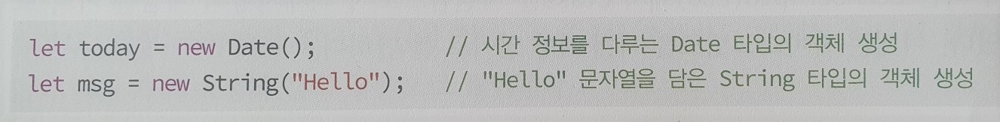
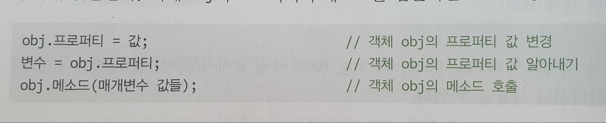

코어 객체
코어 객체들은 JS 언어가 실행되는 어디서나 사용 가능한 객체들로서 여러 타입이 있다.
new 키워드로 코어 객체 생성
코어 객체의 생성은 항상 new 키워드를 이용한다. Date 와 String 타입의 객체를 생성하는 예를 들면 다음과 같다.

객체 접근
객체가 생성되면 객체 내부에는 프로퍼티와 메소드가 존재하게 되며, 이들은 점(.) 연산자를 이용하여 접근한다.
객체 obj의 프로퍼티와 메소드를 접근하는 코드 모양은 다음과 같다.
